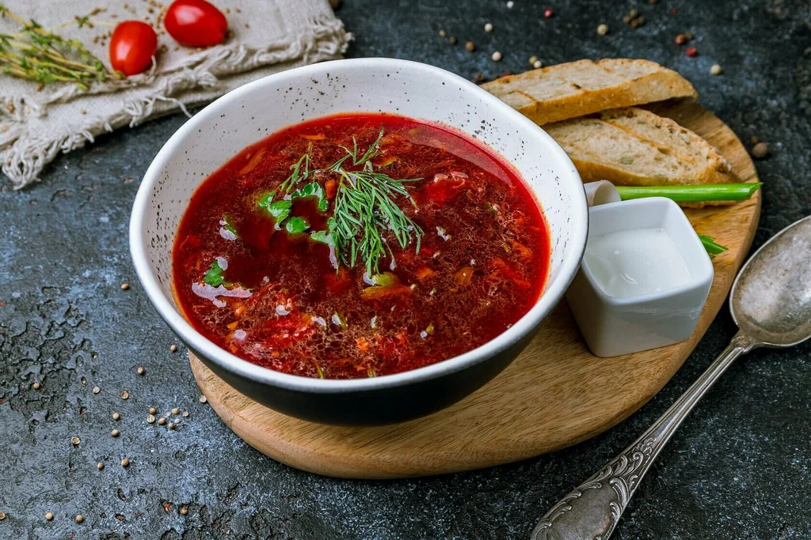
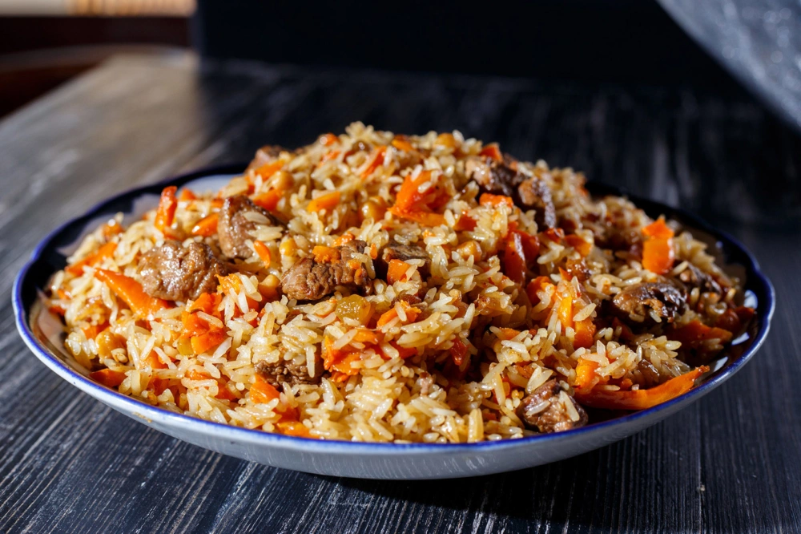
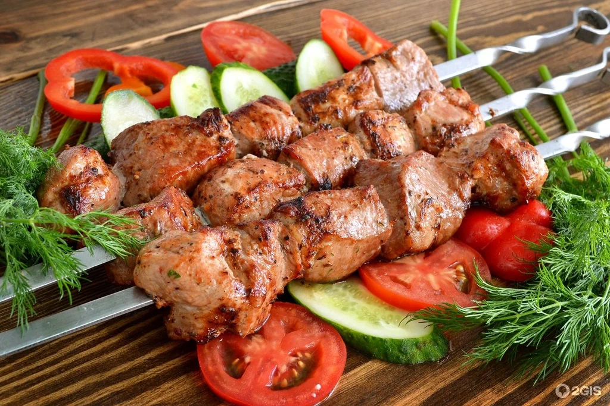
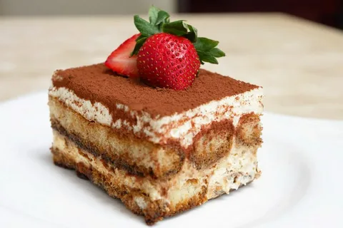
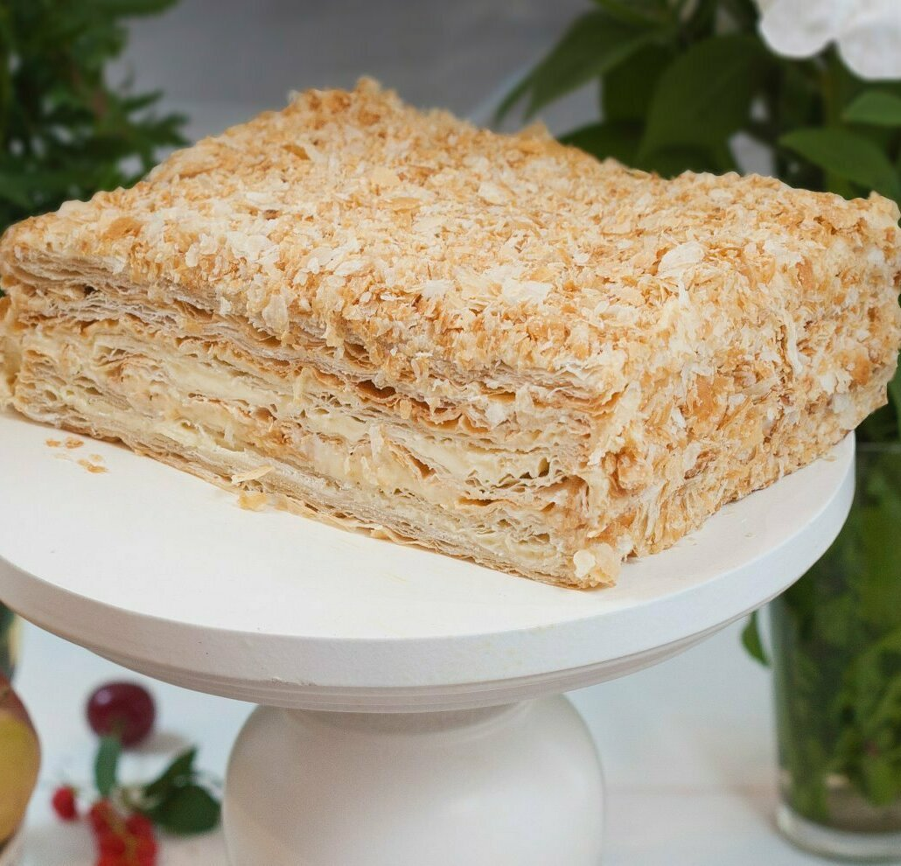
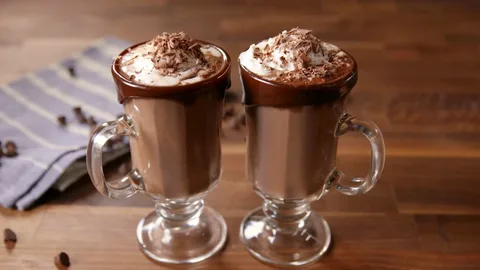
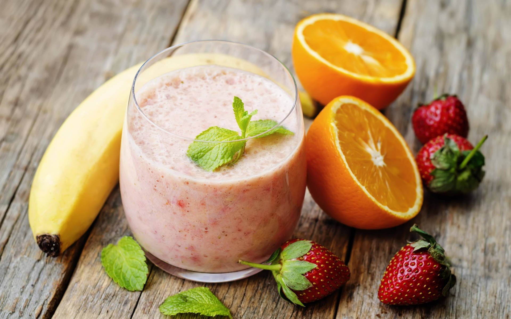

Основные блюда

Борщ
Ингредиенты:
- 500 г говядины
- 2 картофелины
- 1 свекла
- 2 моркови
- 150 г капусты
- 1 луковица
Инструкция:
- Сварите бульон на говядине.
- Добавьте нарезанные овощи поочередно.
- Тушите до готовности и подавайте с зеленью и сметаной.

Плов
Ингредиенты:
- 500 г риса
- 300 г баранины
- 2 моркови
- 1 луковица
- 50 мл растительного масла
Инструкция:
- Обжарьте мясо и овощи.
- Добавьте рис и воду в соотношении 1:2.
- Тушите на слабом огне до готовности.

Шашлык
Ингредиенты:
- 1 кг свинины
- 3 луковицы
- 100 мл уксуса
- Специи для мяса
Инструкция:
- Маринуйте мясо с луком и уксусом.
- Насадите кусочки на шампуры.
- Жарьте на углях до румяной корочки.
Десерты

Тирамису
Ингредиенты:
- 200 г печенья Савоярди
- 250 г маскарпоне
- 2 яйца
- 50 г сахара
- 150 мл кофе
Инструкция:
- Смешайте маскарпоне с сахаром и яйцами.
- Окуните печенье в кофе и уложите слоями.
- Смажьте кремом и охладите.

Наполеон
Ингредиенты:
- 500 г слоеного теста
- 1 л молока
- 200 г сахара
- 4 яйца
- 100 г муки
Инструкция:
- Испеките коржи из теста.
- Приготовьте заварной крем.
- Соберите торт, чередуя коржи и крем.
Напитки
Освежающий лимонад
Ингредиенты:
- 4 лимона
- 100 г сахара
- 1 литр воды
- Лед
- Мята (по желанию)
Инструкция:
- Выжмите сок из лимонов.
- Растворите сахар в теплой воде, затем добавьте лимонный сок.
- Охладите напиток, добавьте лед и мяту.
- Подавайте охлажденным.
Мятный мохито
Ингредиенты:
- 2 лайма
- 10 листочков мяты
- 50 мл сахарного сиропа
- 200 мл газированной воды
- Лед
Инструкция:
- Нарежьте лайм дольками и поместите в стакан.
- Добавьте мяту и слегка разомните их.
- Влейте сахарный сироп и добавьте лед.
- Залейте газированной водой и хорошо перемешайте.

Горячий шоколад
Ингредиенты:
- 500 мл молока
- 100 г темного шоколада
- 2 ст. л. сахара
- 1 ч. л. ванильного экстракта
- Взбитые сливки (по желанию)
Инструкция:
- Нагрейте молоко в небольшой кастрюле.
- Добавьте кусочки шоколада и перемешивайте, пока он не растает.
- Добавьте сахар и ванильный экстракт.
- Перелейте в чашки и украсьте взбитыми сливками.

Ягодный смузи
Ингредиенты:
- 200 г свежих или замороженных ягод
- 1 банан
- 200 мл йогурта
- 100 мл апельсинового сока
- Мед (по желанию)
Инструкция:
- Смешайте все ингредиенты в блендере.
- Измельчайте до однородной массы.
- Перелейте в стаканы и сразу подавайте.